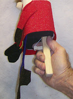

Why "Ventrilo-ett?
9/22/2010
Question: Just exactly what is a ventrilo-ett? Why is it called that and different than a regular figure. I would like to know since you will be sending me that picture of ventrilo-etts from the 1970's. Sandi
* * * * *
Answer from Mr. D: I coined the word "Ventrilo-ett" by combining the two words, "Ventriloquist Puppet". I guess I could have called it a "Puppet-on-a-stick" but I didn't think of it!
The Ventrilo-ett is unique in that it is a hand puppet held and operated from a head post with lever mouth control (hidden by its legs and feet). There's no hand puppet that is easier to operate! Perfect for office, home, classroom, travel ... Pick it up with one hand and begin performing in an instant! Effectively!
For someone wanting to learn to operate a traditional figure, but are not yet able to invest in one, this puppet is the perfect place to start developing the skill and dexterity of operating the larger figure. In fact, this was where the idea for the Ventrilo-ett was born in 1970.
* * * * *
{kind=link}

Answer from Mr. D: I coined the word "Ventrilo-ett" by combining the two words, "Ventriloquist Puppet". I guess I could have called it a "Puppet-on-a-stick" but I didn't think of it!
The Ventrilo-ett is unique in that it is a hand puppet held and operated from a head post with lever mouth control (hidden by its legs and feet). There's no hand puppet that is easier to operate! Perfect for office, home, classroom, travel ... Pick it up with one hand and begin performing in an instant! Effectively!
For someone wanting to learn to operate a traditional figure, but are not yet able to invest in one, this puppet is the perfect place to start developing the skill and dexterity of operating the larger figure. In fact, this was where the idea for the Ventrilo-ett was born in 1970.